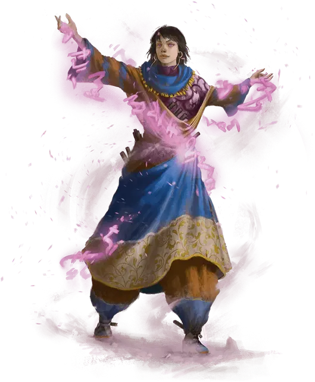

Очаровательный лазутчик
Enchanting Infiltrator
Маленькая или Средняя Фея, нейтрально-злая

Класс Доспеха 18 (скрытое присутствие)
Хиты 156 (24к8 + 48)
Скорость 40 футов
| мод | спас | ||
|---|---|---|---|
| СИЛ | 10 | +0 | +0 |
| ЛОВ | 20 | +5 | +9 |
| ТЕЛ | 15 | +2 | +2 |
| мод | спас | ||
|---|---|---|---|
| ИНТ | 20 | +5 | +9 |
| МДР | 16 | +3 | +3 |
| ХАР | 18 | +4 | +4 |
Навыки Восприятие +9, Обман +12, Скрытность +13
Иммунитет к состояниям испуг, очарование
Чувства слепое зрение 30 футов, пассивное Восприятие 17
Языки Общий, Воровской жаргон, плюс один язык
Опасность 11 (7200 опыта)
Бонус мастерства +4
Особенности
Легендарное сопротивление (3/день). Если лазутчик проваливает спасбросок, он может вместо этого сделать спасбросок успешным.
Скрытое присутствие. К КД лазутчика прибавляется его модификатор Мудрости, и лазутчик не может стать целью магии Прорицания или умений, позволяющих читать его мысли или определять тип его существа.
Действия
Мультиатака. Лазутчик совершает две атаки Отравленным клинком и может использовать Соблазнительный шёпот.
Отравленный клинок. . Рукопашная или Дальнобойная атака оружием: +9 к попаданию, досягаемость 5 футов или дистанция 60 футов, одна цель. Попадание: 7 (1к4 + 5) колющего урона плюс 11 (2к10) урона ядом.
Соблазнительный шёпот. Лазутчик магическим образом шепчет существу, которое он может видеть в пределах 30 футов. Цель должна преуспеть в спасброске Мудрости Сл 17, иначе станет ошеломлённым из-за страха или восторга (по выбору лазутчика) до конца своего следующего хода, после чего цель становится невосприимчивой к этому Соблазнительному шёпоту в течение 24 часов.
Реакции
Невероятное уклонение. Когда нападающий, которого лазутчик может видеть, попадает по нему атакой, он может реакцией уменьшить вдвое урон, причиняемый ему этой атакой.
Легендарные действия
Лазутчик может совершить 3 легендарных действия на выбор из перечисленных ниже вариантов. Лишь одно легендарное действие может быть совершено за один раз, и только в конце хода другого существа. Лазутчик восстанавливает истраченные действия в начале своего хода.
Ловкость. Лазутчик выпутывается из немагических пут и оканчивает на состояние схваченный, после чего перемещается на свою скорость, не провоцируя атак.
Ранение (стоит 2 действия). Лазутчик совершает одну атаку Отравленным клинком.
Дезориентирующий побег (стоит 3 действия). Лазутчик волшебным образом становится невидимым и создает иллюзорную копию самого себя в собственном пространстве, после чего телепортируется вместе с любым снаряжением, которое на нем надето, в незанятое пространство в пределах 15 футов от себя. Иллюзия метает иллюзорные клинки в двух существ по выбору лазутчика, находящихся в пределах 20 футов от иллюзии. Каждая цель должна совершить спабросок Мудрости Сл 17, получая 13 (3к8) урона психической энергией при провале или половину этого урона при успехе. Невидимость действует до конца следующего хода лазутчика.
Логово
Этот лазутчик обитает в месте силы и безопасности, будь то скрытое здание гильдии воров или роскошный особняк. Логово наполнено хитроумными ловушками, которые дезориентируют, ослабляют и убивают незваных гостей.
ПО лазутчика увеличивается до 12 (8,400 опыта), если столкновение происходит в его логове.
Действия логова
При значении инициативы «20» (проигрыш при ничье), лазутчик может совершить действие в логове, чтобы создать один из следующих эффектов; он не может использовать один и тот же эффект два раунда подряд:
Отвлечение. Пронзительный звук наполняет логово. Существа, которые могут его слышать, должны преуспеть в спасброске Телосложения Сл 15, иначе их концентрация прерывается.
Западня. Скрытые ловушки нацеливаются на трёх существ, которых лазутчик может видеть в логове. Каждое существо должно преуспеть в спасброске Силы Сл 15, иначе станет схваченным (Сл высвобождения 15) и опутанным до тех пор, пока не высвободится или удерживающая его ловушка не будет уничтожена. Каждая ловушка имеет КД 11, 10 хитов и обладает иммунитетом к урону ядом и психической энергией.
Ловушки. Ловушки нацеливаются на двух существ, которых лазутчик может видеть в логове. Каждая цель должна преуспеть в спасброске Ловкости Сл 15, иначе попадёт в ловушку. Лазутчик бросает 4к6 и пораженные цели получают урон, равный общему выпавшему значению. Урон является дробящим, колющим, рубящим, уроном ядом или огнём, по выбору лазутчика, когда он использует это действие.
Местные эффекты
Местность, в которой находится логово лазутчика, искажается его присутствием, создавая один или несколько из следующих эффектов:
• Процветание коррупции. Находясь в пределах 3 миль от логова, существа, которые не являются членами организации наёмного убийцы с помехой совершают проверки характеристик, основанных на навыках Проницательности, Восприятия и Убеждения.
• Сильнодействующие токсины. Когда члены организации лазутчика наносят урон ядом, находясь в пределах 3 миль от логова, они игнорируют сопротивление цели к урону ядом.
Если лазутчик умирает, эти эффекты исчезают в течение 1к10 дней.
Описание
Антагонист для партий 2-го уровня (уровни с 5 по 10), очаровательный лазутчик - это фея, которая обольщает и вводит в заблуждение.